Feature guide 11/12 · Updated November 14, 2026
Manage projects with project folders and Git
Open and save a project folder unpacked with sb3-toolchain directly, without repacking it into an SB3, and check Git changes, diffs, and history inside the editor. You can compare public PRs without a connection. In an editor with a GitHub connection (a web build with a connection target set up, or a supported Desktop app), you can also sync and review private PRs.
The figures show the full screen of the public editor (GitHub Pages) as of November 14, 2026, in English mode. The projects and repositories are made up for illustration. Select an image to open it at full size.
11.1 Manage projects and extensions with sb3-toolchain
sb3-toolchain is a Node.js tool you run locally. import unpacks an SB3 into project data, assets, and embedded extensions so you can review changes with Git. check validates the unpacked data, and build generates an SB3 for distribution. You can also open and edit an unpacked project folder directly in the editor (see Open and save a project folder).
Unpack the project
Project data, assets, individual extensions
Bundle extensions into one when needed
- Manage extension metadata. When bundling, the tool reads the name, description, and sandbox requirements written in the extension code header. You can pin a GitHub commit or an npm version and verify the SHA-256 of the code to embed. When updating, you can also check compatibility with an API manifest.
- Combine several extensions into one. While keeping the original code, you can embed several extensions in the distributed SB3 as a single composite extension. Permission to run is decided for the composite extension as a whole.
- Check the trust conditions of the official catalog. The public editor treats extensions that meet the conditions of the official TurboWarp Plus family catalog as trusted. The editor matches the source and the SHA-256 of the code listed in the catalog before skipping the individual approval screen.
Unpacking and rebuilding SB3 files · Extension bundles · Official catalog
11.2 Open and save a project folder
You can open and save a project folder unpacked with sb3-toolchain v1 without packing it back into an SB3. To choose and write a folder in the browser, you need Chrome or Edge with File System Access support.
Create a project folder
While a new project or an SB3 is open, click the "Project folder" button at the top left to open the panel, then click "Create Project Folder" and choose the folder to save to. If the folder is not empty, a screen asks you to confirm that its contents may be overwritten. When creation finishes, the panel shows the files in that folder, and later saves write to that folder.
Open a project folder
Choose "File" → "Open Project Folder…", select the project folder, and allow reading and writing. The project data and the local images and sounds are loaded.
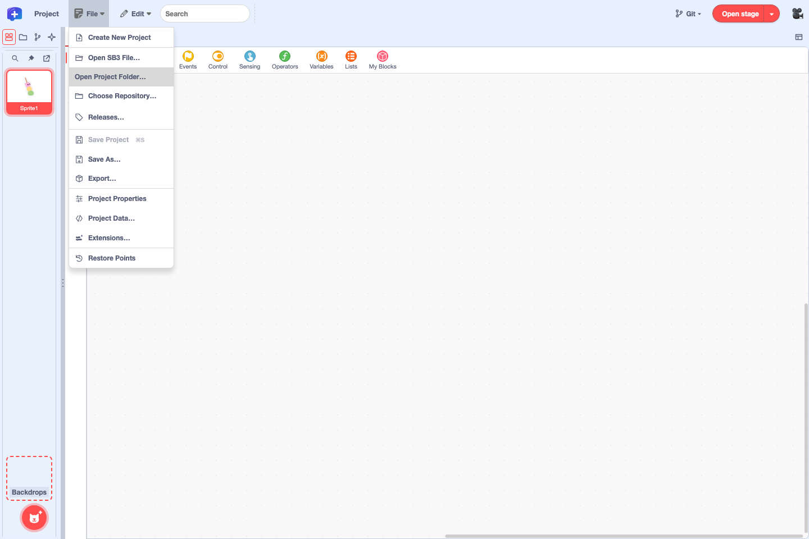
Save to the project folder
- Edit blocks, variables and lists, sprites and costumes, sprite positions and sizes, and so on. Positions and variable values that changed while running the project are saved too.
- Choose "File" → "Save Project" to update
project.source.jsonin the folder. Before saving, the editor checks that the folder has not been changed outside the editor.
Adding, deleting, and renaming sprites, and adding and deleting costumes and sounds, are saved as well. In that case the editor also updates assets/ and sb3-source.json in the folder and deletes image and sound files that are no longer used. References to system fonts and web fonts are saved in the project data; font files are saved in assets/.
You can also open and save projects that contain embedded extensions or custom extensions loaded from a URL. Extension code is written back to extensions/ and embedded-extensions.json. If you replace an extension and its origin record (source) is dropped, the editor tells you when you save.
See project folder files and their Git status
Click the "Project folder" button at the top left to open the "Project folder" panel. Under each file name, the panel shows what the file is for, such as project data, costume and sound files, or extension files.
*means the content you are editing in the editor is not saved yet. It appears after the file name, separated by a space, and disappears when you save.- Bold marks files whose saved content differs from the latest commit (HEAD), and new files added to Git but not committed yet.
- ✨ marks saved files that Git does not track yet.
Strikethroughmeans a file that was in the latest commit has been deleted. A deleted file is shown in the folder it used to be in.- Files whose saved content matches the latest commit have blue names. The name turns purple if the current branch's tracking branch (the matching branch on GitHub) has the same version, and green if the editor can confirm that the same version is in the merge result of a GitHub PR.
While a file has saved changes and you keep editing it, the bold file name also gets *. After you commit, files that match the committed content return to normal weight.
Hover over a file name to see its status as text. To see what changed, open the file and switch to "Diff", or select the file in Local Git. Images, sounds, and videos open in a preview.
With the buttons at the top right of the panel you can search files, pin the drawer, and move the panel to another window. A pin with a slash means the drawer is unpinned. You can also right-click files and folders to work with them, or drag them into another folder. Assets the project refers to and the management files of the project folder are updated through the editor's editing screens and save commands.
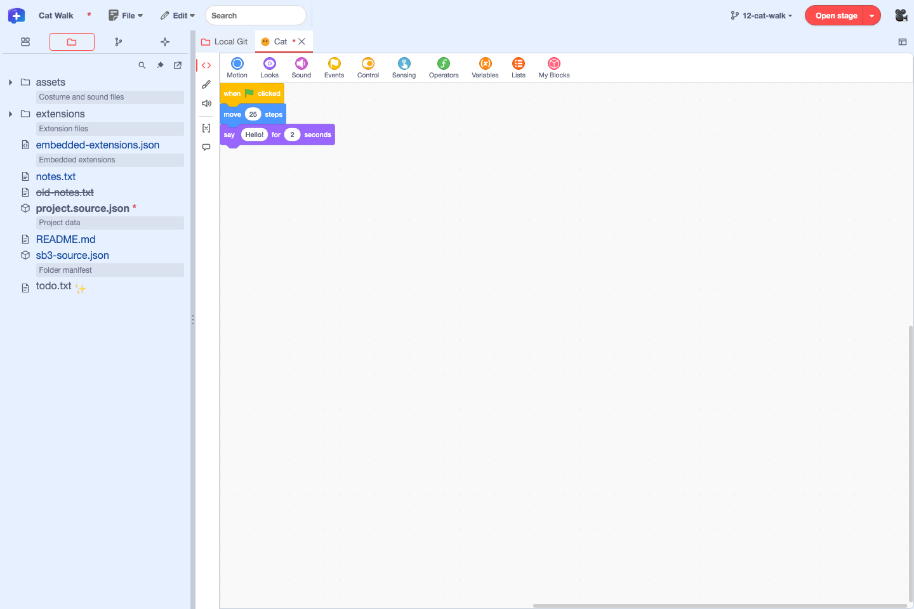
* after project.source.json means unsaved edits, and bold means the content saved on disk differs from the latest commit. Files with blue names match the commit.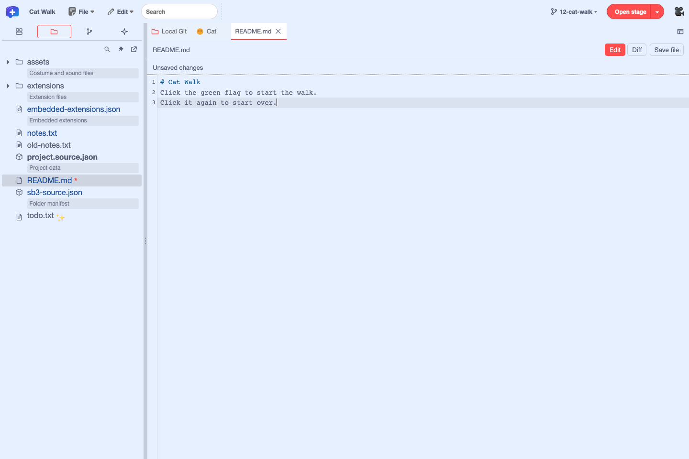
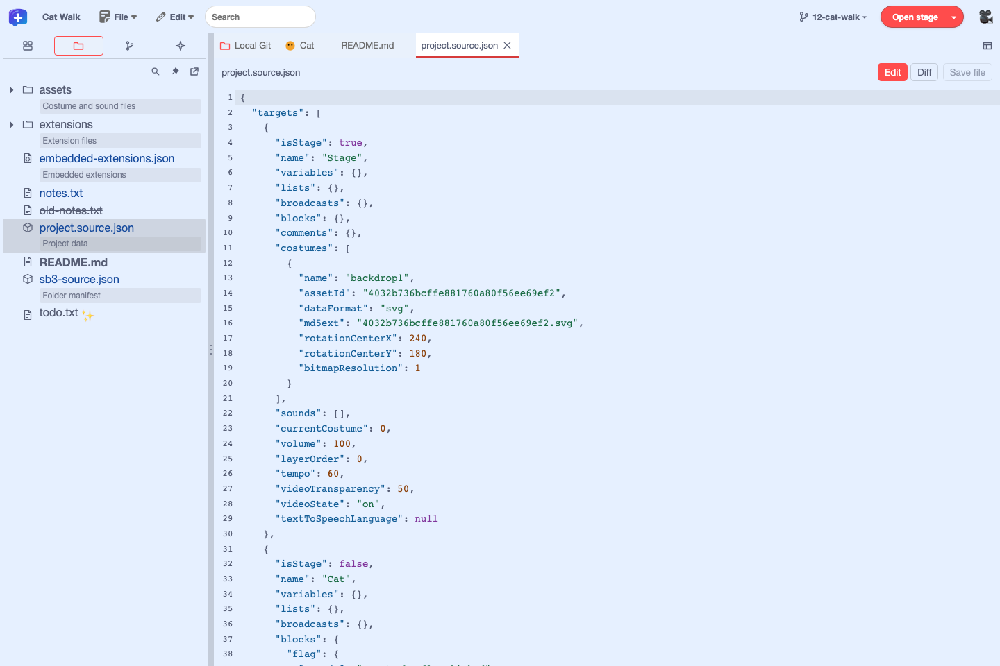
You can also use Project Starter, a command that unpacks an SB3 into a project folder (see Move a Scratch project with Project Starter).
11.3 Check changes and history with local Git
Choose "File" → "Choose Repository…" and select the root of a repository that has .git. You can also use the button to the left of "Open stage" on the right of the menu bar. Before you choose a repository, it reads "Git ▾" and offers "Choose Repository…" and "Open Local Git". After you choose a repository, the button shows the current branch name and lets you switch branches, choose "New Branch…", or choose "Open Local Git".
How to use "File" → "Releases…" is explained in Release and distribute.
The basic rule is one project per repository. If a project is at the root of the repository or in the project/ folder that Project Starter creates, and it is not open yet, "Open Project" appears at the top of Local Git. If you open a project in another location with "File" → "Open Project Folder…", it is associated with the selected repository. Once the project is open, you can check changes for the stage and each sprite. Repository layout
The first line of Local Git shows "Repository: name". "Refresh local status" next to it reads the Git status again; click it after using Git outside the editor. In an editor with a GitHub connection, "Connect to GitHub…" also appears here. When you switch branches or pull in the editor, "Reload Project" appears in the result; click it to reopen that version of the project. While the "Project folder" panel is shown on the left, the "Local Git" tab with a folder icon is pinned to the left end of the tab row.
Below it, switch views with "Save files", "Commit saved changes", "Create PR", and "Merge". "Save files" and "Commit saved changes" show how many files they cover.
- In Save files, select a file name in the list on the left to see, on the right, the diff between the latest commit on the current branch (HEAD) and your unsaved edits. Project code can be compared as blocks. Click "Save unsaved files" to write your edits to the project folder.
- In Commit saved changes, the saved content is compared with HEAD. Added and deleted files are shown too. The stage and sprites that changed are listed at the top of the list on the left, and README and similar files appear under "Other files". Changes other than code are split into items such as "Other settings". Click an item or file name to see its diff on the right. To select project data and assets file by file, open "List by file". The commit box at the lower left stays visible while you scroll the list, so you can check how many files are selected and enter a commit message (see From saving to committing).
In "Create PR", you can check "Records (commits)" and "Local branches", and select a commit to see its changes. You also switch and create branches here. If your GitHub connection allows creating PRs, you can choose a base branch and create a PR. In "Merge", select a PR from "Pull requests" and check its diff and merge status.
The "Git history" button at the top left lists the commits in the selected repository. Selecting a commit opens "Create PR" in "Local Git" and lists that commit's changes. Select the stage, a sprite, or a file to see the diff.
From a commit's "⋯" menu, you can choose "Open This Version", "Create branch here…", or "Copy commit ID". If a project folder is open, "Open This Version" runs the selected version in a separate player. The project you are editing stays as it is, and closing the player takes you back.
If you add twPlusGitRestoreVersion=1 to the launch URL, "Restore This Version…" is added to the "⋯" menu. After checking the project files involved and the additions, changes, and deletions, click "Restore and Record" to make a local commit on the current branch. Click "Reload Project" to open the restored version. This feature is off by default.
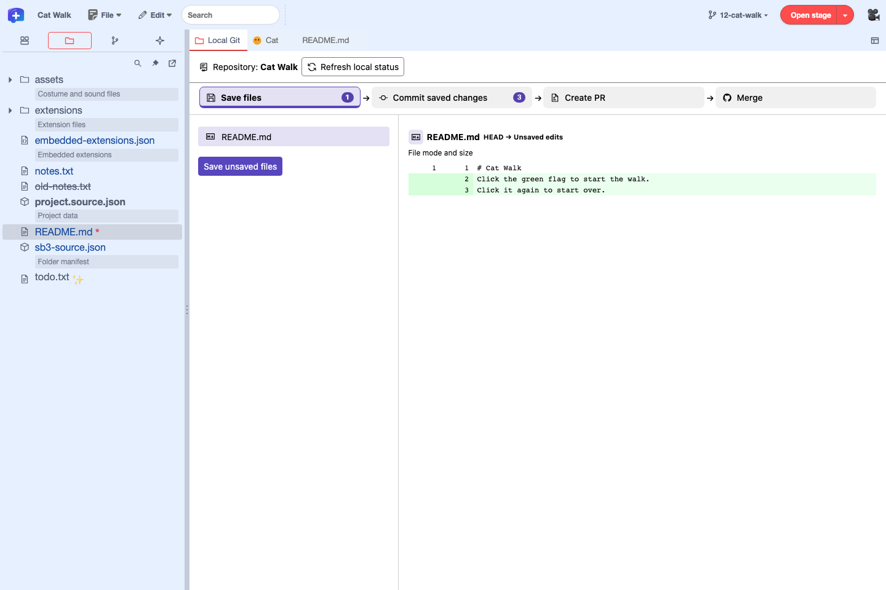
* and moves README.md to the "Commit saved changes" list.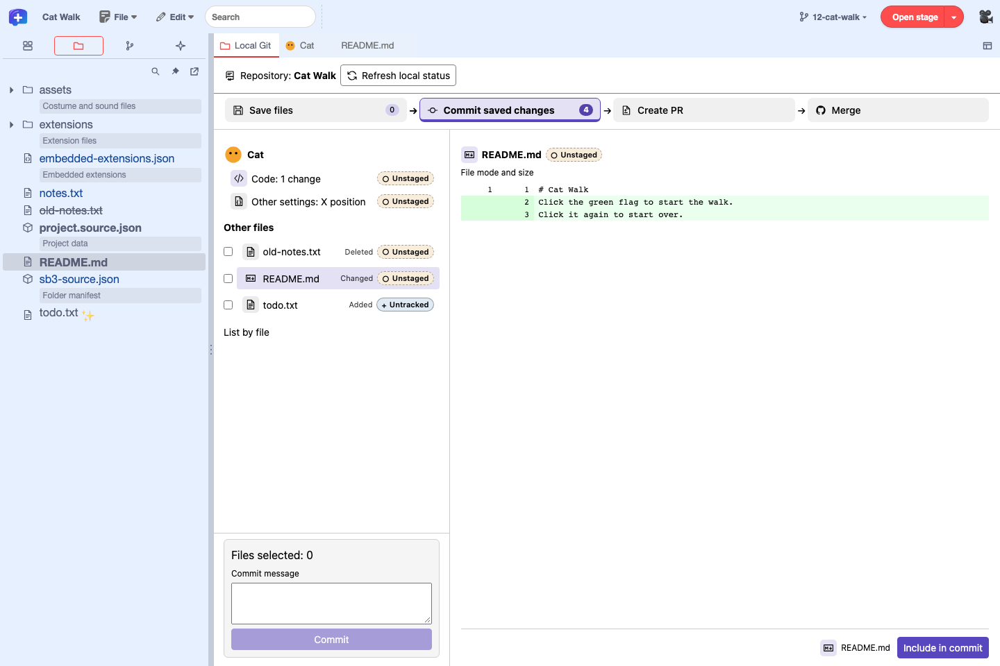
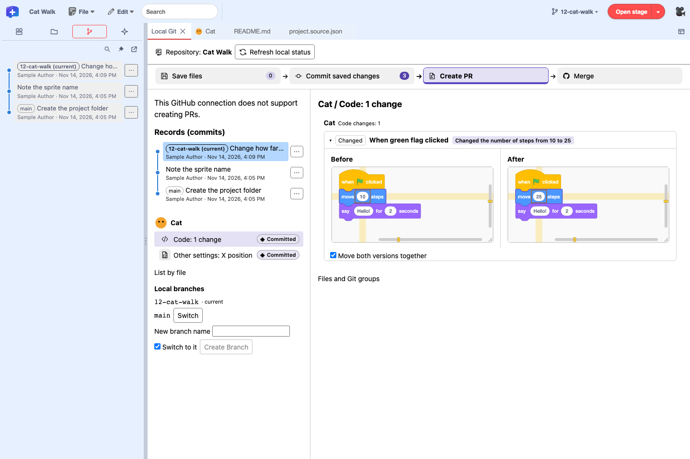
Working trees added with git worktree, submodules, and symbolic links are not supported. Changes to execute permissions in the working tree cannot be detected from the browser. If you do not use local Git, add twPlusLocalGit=0 to the launch URL. The "Git ▾" button in the menu bar and the "Git history" button are then hidden too.
11.4 Compare project changes as blocks
In "Commit saved changes", select "Code" for a stage or sprite to show the diff of the project data (project.source.json) script by script. Switch to "Text" to see the line-by-line diff of the JSON.
- Only scripts that changed become comparison items, and the before and after blocks are shown side by side. Additions, deletions, changed input values, and so on are annotated, and changed inputs and fields are outlined in orange.
- Click "Highlight in Editor" to see where the change is in the script in the editor.
- Scripts that were split or joined are grouped into one item, using the blocks the two versions have in common.
- Changes outside scripts, such as variables, lists, costumes and backdrops, sounds, and monitors, are shown separately.
Yellow horizontal and vertical bands and markers on the scroll bars show where the changes are. Hovering at a band's horizontal position or height darkens the matching band.
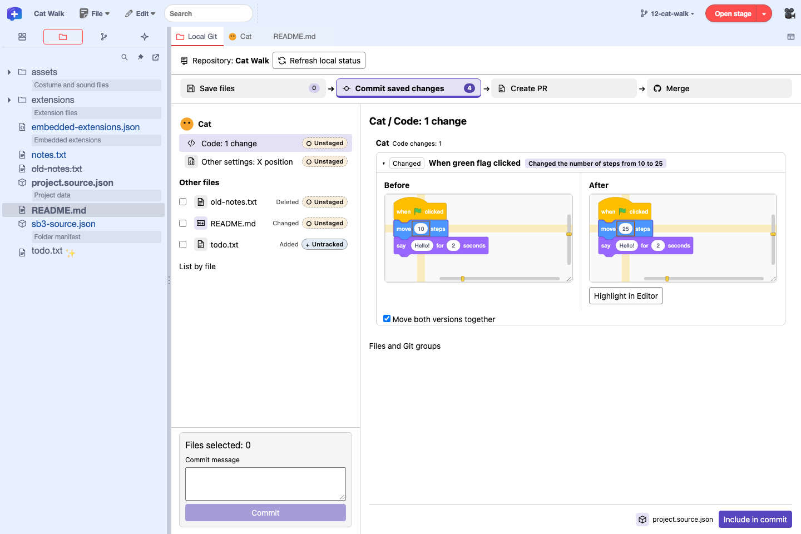
Extension blocks that the editor has no definition for are shown as placeholder blocks that keep their names and connections. The editor does not fetch or run the extension code.
11.5 Sync with GitHub (fetch, pull, push)
Open "GitHub Connection Settings…" from the Plus logo at the left end of the menu bar and choose the default connection method. The setting is stored in the browser, and you can change it even before opening a project or repository. A change applies from the next connection; the current session continues.
Authentication for each repository is done with "Connect to GitHub…" on the first line of Local Git. Confirm the target (the GitHub HTTPS remote origin of the selected repository), authenticate, and allow push or sending PR reviews if needed. You also check and end the connection here. Once connected, "Create PR" and "Merge" show a "Sync with GitHub" section that lists the current local branch used for pull and push, and the sync status the editor could confirm.
| Task | The public editor (GitHub Pages) | An editor with a GitHub connection |
|---|---|---|
| Local diffs and commits | Works without a connection | Works without a connection |
| Fetch, pull, push | Use GitHub Desktop or Git | Connect to the selected repository. Allow push when connecting |
| Compare and run PRs | Shows diffs of public PRs. Open private PRs on GitHub. To test, use the SB3 built by the GitHub Actions "Check project" workflow (12.8) | Shows diffs of public and private PRs in the connected repository, and runs the compared version locally |
| Create and merge PRs | Use GitHub | Use a connection with "Allow sending to GitHub (push)" checked (if the connection target supports creating and merging PRs) |
| Send reviews | Send from the PR page on GitHub | Use a connection that allows sending reviews and has the matching GitHub API enabled |
In the public editor (GitHub Pages), "GitHub Connection Settings…" shows "No GitHub connection is configured.", and "Connect to GitHub…" does not appear in Local Git. Even where you cannot connect, you can keep syncing and reviewing with Git and the GitHub website. Steps without a connection
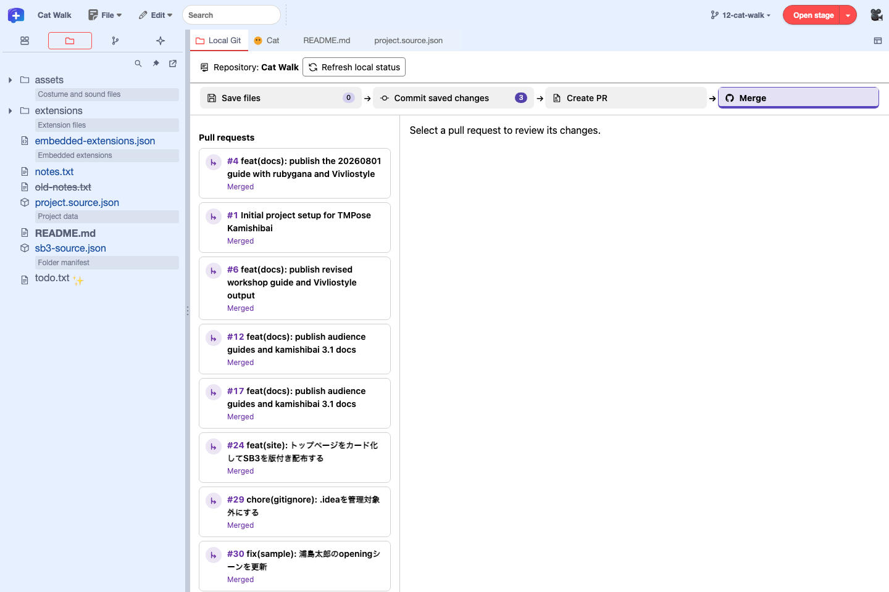
| Command | Where | What it updates |
|---|---|---|
| Refresh local status | Next to the repository name | Reads the state of local files, commits, and branches again. |
| Update remote refs (fetch) | The "Sync with GitHub" section | Gets branch information and commits from GitHub. Your local branches and files stay as they are. |
| Update local branch and files (pull) | The "Sync with GitHub" section | Applies changes from GitHub to your local branch and files. If needed, reopen the project with "Reload Project". |
| Reload PR information from GitHub | Next to the title of the selected PR | Gets the PR list and the diff of the selected PR again. If the connection supports it, CI and mergeability are updated too. |
Choose a connection method
| Method | Setup and authentication |
|---|---|
| Browser version (Cloudflare) | In a web build with a connection target, authorize the operator's GitHub App. The token is encrypted and stored on the operator's server, and a sign-in lasts up to 8 hours |
| GitHub App on Desktop | In a Desktop with the App's client ID set, enter the device code shown in the editor on GitHub |
| Fine-grained PAT on Desktop | Uses a fine-grained PAT (personal access token). Available with a supported bundled version. On GitHub, select the target repositories and create a token with read access to Contents (read and write for push), then enter it in Desktop's input screen. Where saving is offered, the token is encrypted with the OS protection feature |
| Git credential helper on Desktop | With a supported bundled version, uses the credentials of the helper that applies to the target repository. Enter your GitHub account name and agree on Desktop's confirmation screen |
PAT and credential helper are methods for use without a client ID. You can choose them when both Desktop and its bundled editor support them. You can check the bundled version in the build information of the Desktop release. Desktop's pinned revision · Editor-side support
Install and authorize the GitHub App
- On the GitHub App page your operator points you to, click "Install". Choose the account to install it on, and if your organization requires it, ask an administrator to approve.
- Under "Only select repositories", choose the repositories to use from the editor. Check the Contents permission for syncing, and also the Pull requests write permission for sending reviews.
- With "Connect to GitHub…" in Local Git, confirm the target repository and the permissions you need. On GitHub's authorization screen, check the App name and permissions. On Desktop, enter only the device code shown in your own editor.
- When you are done, disconnect in the editor. In GitHub's "Settings" → "Applications", you can revoke the installation under "Installed GitHub Apps" and the authorization under "Authorized GitHub Apps".
When the App gets new permissions, approve them for the installation under "Installed GitHub Apps". The GitHub App token is held by the Cloudflare server or Desktop's main process. The editor's Git panel communicates using a short-lived proxy key limited to the target repository and operations. GitHub App setup for connection operators
Sync a connected repository
- Fetch. "Update remote refs (fetch)" gets the remote branches and commits.
- Pull. Stop the project, deal with unsaved edits and working tree changes, then click "Update local branch and files (pull)". Changes are brought in when a fast-forward is possible, and you can reopen the project with "Reload Project".
- Push. Allow push when connecting, then click "Send current branch (push)". If the result is unclear, fetch to check the remote branch before sending again.
11.6 Review pull requests script by script
You can check a GitHub pull request (PR) from an overview of all changes down to individual scripts. The figures show a public PR opened in "Merge" in the public editor without a GitHub connection. PR #219 in turbowarp-kamishibai-app
- Select a PR. Choose the target repository, open "Merge", and select the PR from "Pull requests" on the left. If the list is long, move with "Previous page" and "Next page". The status label on each row shows whether the PR is mergeable, has conflicts, is a draft, is merged, is closed, and so on. If the GitHub connection can get the CI status, that result is shown as well.
- Check the overview of the changes. In "Overview" on the right, check the PR description and merge status. "Commits" lists the commits in the PR, and "Checks" shows the CI status and, when available, the result of each check.
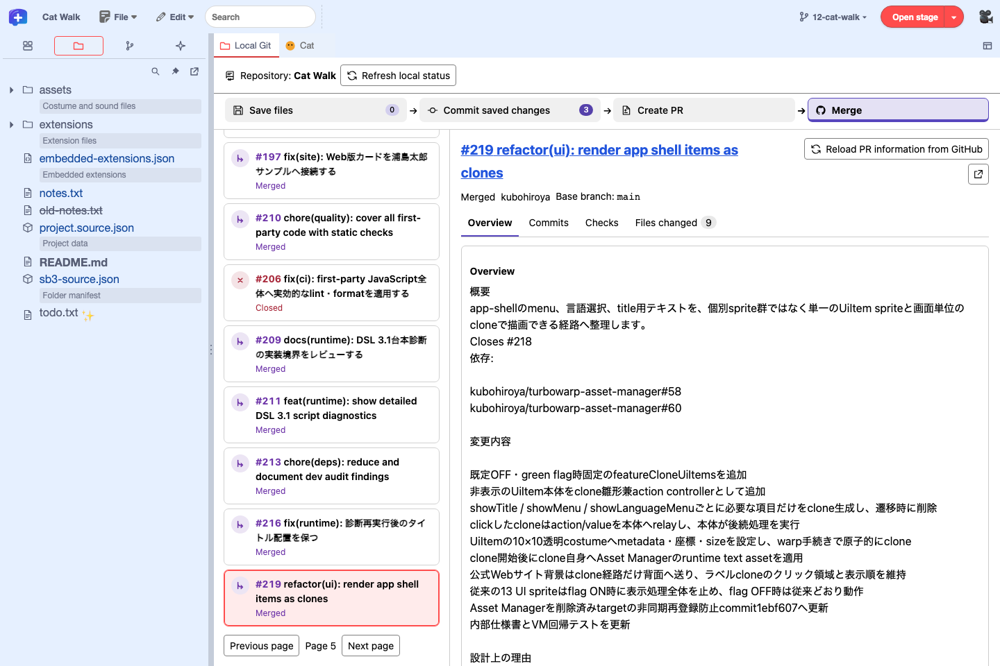
Selecting a PR opens "Overview" on the right. Switch to "Commits", "Checks", or "Files changed" with the tabs at the top. - Look at commits and checks. "Commits" shows each message, author, and commit ID. "Checks" shows the results of the checks run on the PR's head commit.
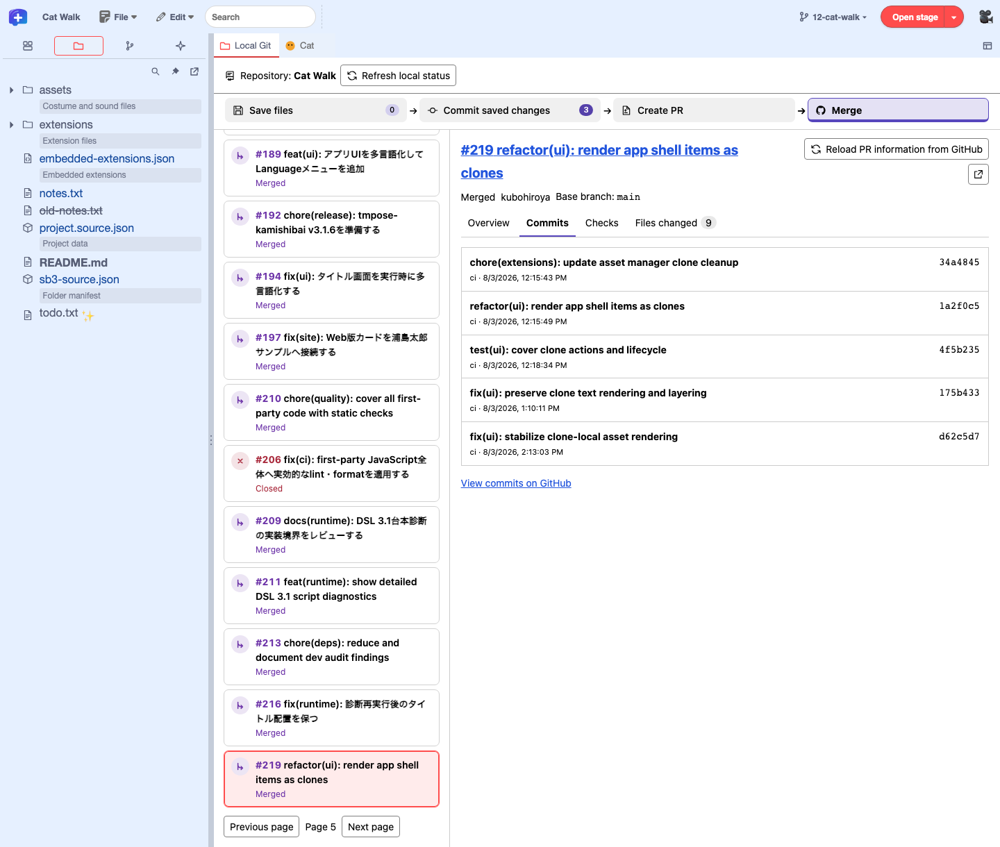
"Commits" shows the commits in this PR. You can also check them on GitHub with the link below. 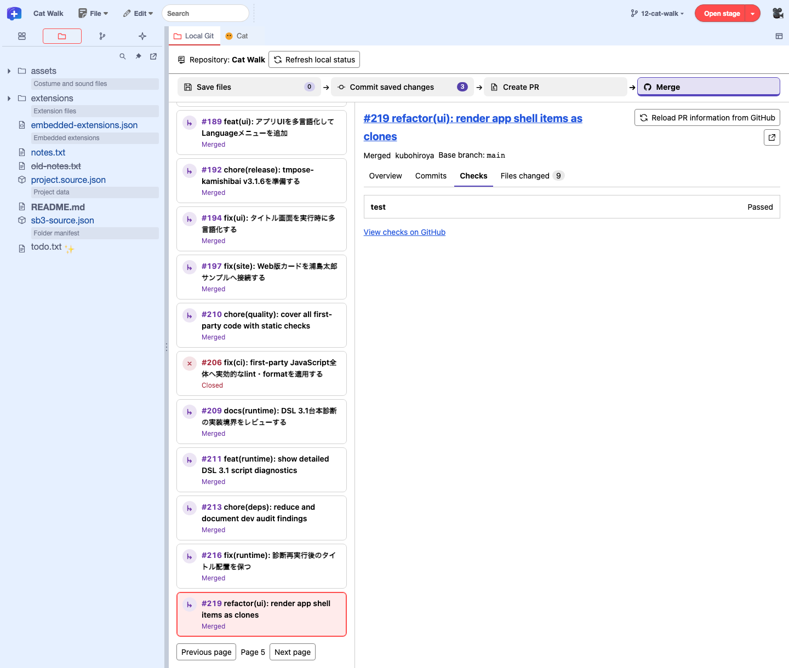
The check results of PR #219 in "Checks". Open the details with "View checks on GitHub". - Compare scripts as blocks. Open the "Files changed" tab (its label shows the number of files). "Change review" at the top shows how many stages and sprites are affected, how many code changes there are, and how many are reviewed. In the
project.source.jsoncard (app/project.source.jsonin this example), find the heading of the stage or sprite, and expand a script listed under it, such as "When green flag clicked" in the example. Compare "Before" on the left with "After" on the right, and check where the outlined blocks are in the script. Scroll inside the comparison frames to see long scripts or wide blocks. Hovering over a comparison frame shows a minimap and zoom in and out buttons at its lower right.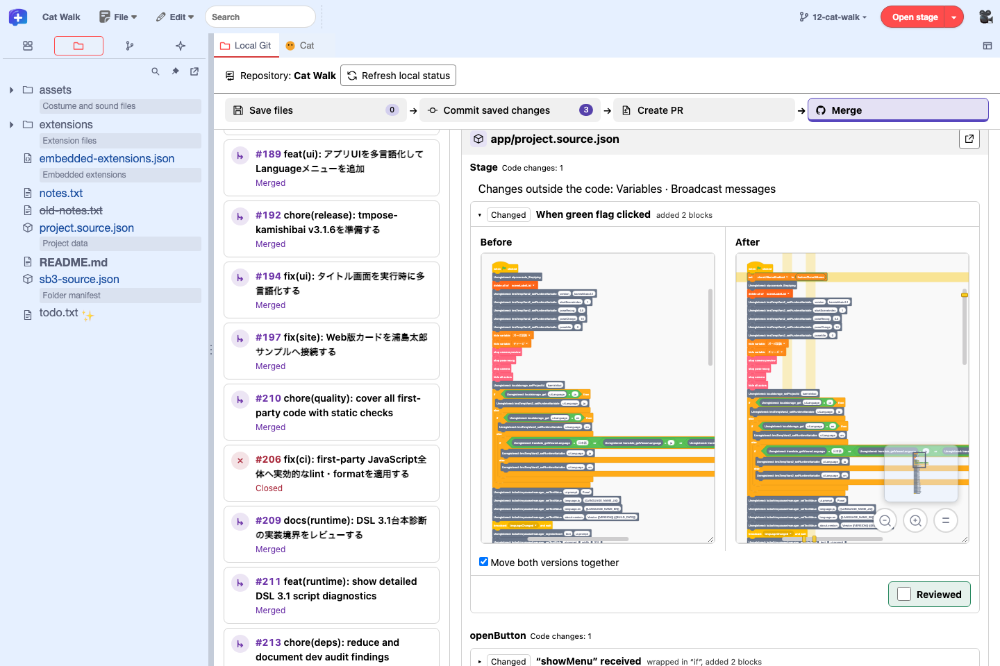
Opening a script in a PR shows the before and after versions side by side. Use the lower right of the frame to zoom or move the view, and mark it "Reviewed" when you have read it.


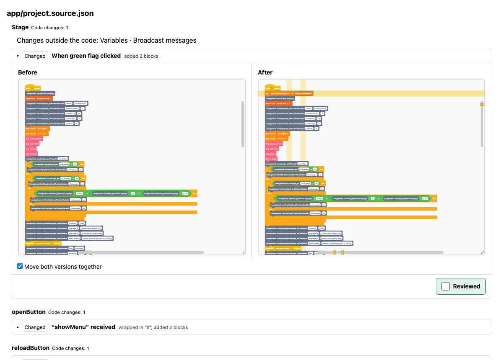
When you finish reading a comparison, record your progress with the green "Reviewed" at the lower right of the script's comparison frame. The mark is stored in the browser and stays after you close the panel or reload the editor. When the PR is updated, only the marks on scripts whose content changed are removed. The marks are not written to project files or to Git. To go back to your local diff, select "Commit saved changes".
How the comparison works. The comparison uses the PR's merge base and head. Without a connection, public PRs are compared through the public API. While connected, you can also select PRs in private repositories you are allowed to access. The PR's head and base branches are fetched over Git Smart HTTP and compared. If the PR's base cannot be determined, GitHub's default branch is used. If there are several candidates, you can choose the "Comparison branch". How the blocks are displayed is explained in Compare project changes as blocks.
Related actions. The PR number and title in the right pane open the PR on GitHub. Click the "Open diff in editor tabs" icon at the top right of the PR heading to open the project diff in separate editor tabs. Click "Open in another window" at the top right of a changed-file card to check that file's block diff in another window. "Reviewed" marks you set in editor tabs or another window also appear in "Files changed" in Local Git. The branch button in the menu bar switches the branch you edit locally.
To run the PR version, open the project folder first, then choose "Open PR project to run" on a PR opened while connected to GitHub. The editor creates a local branch (for example pr/219) at the compared commit, switches to it, and reopens that version of the project. It stops without switching if the project is running, if there are unsaved edits or working tree changes, or if a branch with the same name points to a different commit. When you are done, switch back to the original branch from the branch name in the menu bar and choose "Reload Project". The branch used for testing stays in your local repository.
Send a review
"Reviewed" is a mark for your own progress. To send a review to GitHub, select "Allow sending reviews" when connecting, then open the PR. The connection target must have the review GitHub API enabled, and you need permission to send reviews in the repository.
In "Send a review", check the overall comment and the comments on code, choose "Comment", "Approve", or "Request changes" as the result, and click "Send Review". Before sending, the screen shows whether code comments can become threads or go into the review body. If you cannot use the review form, open the PR on GitHub and review it from "Files changed". Steps for checks, review, and merge
Connection operators enable API groups with GIT_GITHUB_API on Cloudflare and TW_PLUS_DESKTOP_GIT_GITHUB_API on Desktop. review-threads handles comments attached to positions in the diff, and reviews-body can be used to send reviews with a body only. The Desktop API is off by default. API settings · Review sending test status
Connecting to the editor · PR review procedure · Review PRs as Scratch scripts